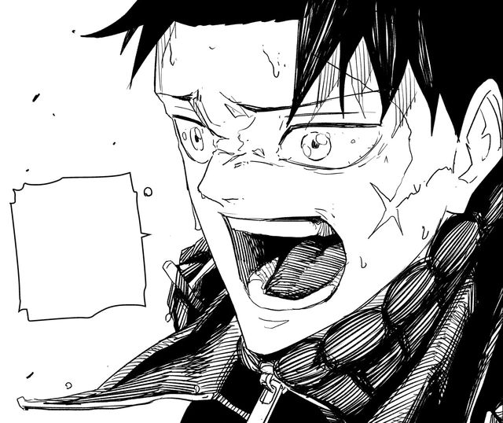

Jump has a file for “father dies, son walks.” Kagurabachi keeps the file and then keeps naming the father. Kunishige is not a saint in flashback; he is a man who sold weapons, stabilized a cursed ore, won a war, and tried to raise a child over a cellar of failures. Chihiro’s stoicism is workshop manners. His refusal to kill bystanders is the one moral the smith actually transmitted.
Every ally is an inheritance test. Shiba is the friend who stayed. Hakuri is the son of a house that treats children as stock. Iori is what happens if you erase the father instead of explaining him. Sojo is what happens if you love the work and not the man. Hiyuki is the state as a person you might, on a good day, stand next to.
The coat is the revenge costume. Hokazono said it in the Asahi interview: in a revenge tale where the protagonist’s clothes are stained black with blood, white, black, and red match well. The fish are from the kitchen. Kuro, Aka, Nishiki named for the bowl, not for a battlefield. Chihiro’s early swagger, recover the six, kill the men who ordered the raid, is the file. The bowl is the inheritance. He observes before he draws. He copies Uruha, Samura, Iori. He treats Enten as a partner. That is workshop manners applied to a national weapon.
Char is the first test the file cannot pass without changing genre. If Chihiro leaves her, the book is a different story. Azami wants him away from Sojo. He stays. He loses an arm and does not spend the child. Vs. Sojo is revenge learning it will have to protect someone who cannot hold a sword. The Anti-Cloud Gouger Forces die around a mission Chihiro refuses to file as acceptable loss. Sojo dies on the ore rather than admit the experiment failed. Chihiro keeps the pieces. Inheritance is also: do not throw the work away.
Hakuri is the inheritance test that looks like a sidekick and is actually architecture. The Sazanami called him empty. He was scattering his own spirit energy. When he chooses Chihiro over the Rakuzaichi, the Storehouse opens. The discarded son inherits the building. Chihiro’s deal with the Kamunabi, Magatsumi to the state, Enten to the son, Hakuri as the door that walks, is revenge agreeing to use a house it does not trust. Yura is the named target. The basement is where the named target stops being enough.
Iori is the daughter version of the same homework. Samura erased himself rather than explain the Malediction. The seal broke when she chose to protect someone. Chihiro learns Iai by watching, which is how a smith’s son inherits a school he was never enrolled in. Samura opens his eyes after Chihiro says Enten’s brief. The father who hid becomes the father who sees. Then he spends the last of his life on Magatsumi so the son can leave. Iori receives Tobimune. Inheritance as a blade passing to the person who wanted the memories.
Akemura is the inheritance nobody asked for. Maternal uncle, Sword Master, author of the atrocity the Kamunabi filed as victory. Chihiro’s generation inherits both the flowers and the lie about who planted them. The question he asks Yura in the room, why did you kill Kunishige, is the revenge file spoken aloud. The answer he gets is a man who planned a raid so he could hold Magatsumi, then offered the uncle a body. Revenge got Chihiro to that door. It cannot get him through it. The seventh blade was never only a weapon of succession.
Part 2’s move into Chiaki and the Irishima talks is the series admitting revenge was the prologue. The real estate is a mineral, a marriage, and a government that will always prefer a useful myth to a living island. Chiaki’s foresight is the clan’s warrant. Kunishige has not yet looked at the ore. The son who will wear the black coat has not been born. Inheritance starts in a workshop that is still a dealer’s stall. The goldfish are not yet techniques. They are still just fish.